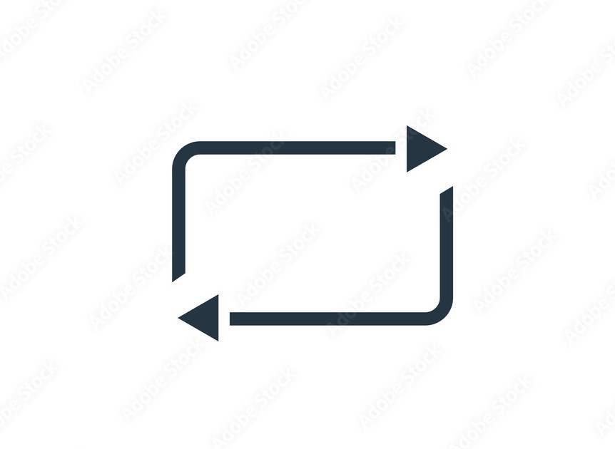

Twittter Card layout
Grady Booch
@Grady_Booch . 4oct
Much of contemporary computing was woven on a loom of sorrow, forged in the conflicts of WW II and the Cold War. The need for safety, for protection, and yes, for power led us there.
1

2
52